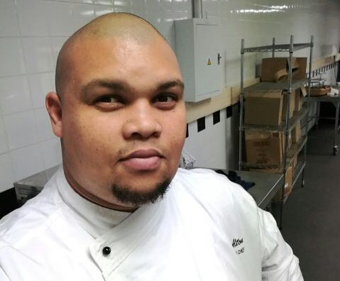

Alton John Williams Resume
Professional Chef

Summary
I am a culinary professional with over 15 years of extensive experience in the culinary industry.
I have a passion for creating exceptional dining experiences and I have experience in various cuisines and cooking techniques.
Education
City and Guilds level 2 Diploma in food preparation and cooking (VRQ) 600/4860/8
2013 - 2014
Pelican Park High School
Matric
2001
Recent Work Experience
May 2022 - Present
Overview of Duties
- Plan and direct food preparation.
- Manage kitchen staff.
- Implement and manage HACCP controls.
- Menu development and planning.
- Plating and presentation of food.
May 2021 - November 2021
Overview of Duties
- Planning menus and preparing food for kids at a school boarding house.
- Waste recording and Management.
- Manage Health and safety aspects of the kitchen.
Feedem, Executive Chef at Siemens, Midrand
February 2019 - June 2020
Overview of Duties
- Management and running of a kitchen for a large corporate canteen.
- Ensure food produced at a consistent quality.
- Manage standard operating procedures and staff.
April 2018 - November 2018
Overview of Duties
- Short term Contract to assist with restructuring.
- Manage Lounge and determine how food is presented or displayed.
- Travel to smaller lounges in South Africa to assist them with staff training and food presentation.
Older Work Experience
- 2015 - 2016 Emperors palace, Sous Chef
- 2013 - 2015 The Roundhouse Restaurant (Fine Dining), Chef De Partie
- 2013 - 2013 Tsogo Sun Hotels, Chef de Partie & Sous Chef
- 2010 - 2011 Bread Café, Chef
- 2006 - 2010 B-Lounge, Chef
Key Skills and Characteristics
- Food handling and preparation
- Adaptability
- Communication
- Time management
- Leadership
- Attention to detail
- Food safety & quality
- Menu development
About Myself
Portfolio
Contact Me